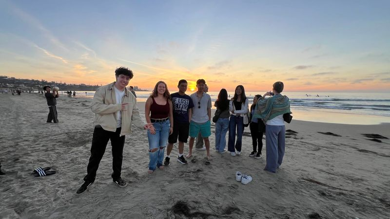

Hack Squad
to present
I help run weekly web development workshops for students who are new to building websites. We cover HTML, CSS, React and Mongoose, and I spend most of each session walking around helping people get unstuck.
A big part of my time at UCSD has gone into helping other people learn, from college students writing their first React app to first graders working on reading and math.
to present
I help run weekly web development workshops for students who are new to building websites. We cover HTML, CSS, React and Mongoose, and I spend most of each session walking around helping people get unstuck.
to present
In ACM's Bit-Byte program, I'm the Byte: a mentor paired with a first-year student, the Bit. I help my Bit with classes, campus life and career questions, and we go to mentorship events together.

to present
I lead the academic subcommittee, which plans Legacy Lectures, Study Jams, the Alumni Dinner and academic workshops. That means finding speakers, including UCSD professors, alumni and working professionals, and coordinating the members who help run each event.
to
I organized 7 lab group sessions with UCSD faculty for more than 70 prospective scholars, and secured Professor Bradley Voytek as the keynote speaker.
to present
I help new members find their footing in their first year at UCSD, both in classes and socially, and encourage them to get involved in Scholars Society events.
to
I helped in a first-grade classroom every week, working with small groups on reading, math and getting along with each other. Explaining something to a six-year-old is very good practice for explaining it to anyone.